地政学
ダナンは中部ベトナムの海上玄関で、ハイヴァン峠、南北幹線、港、空港が重なります。旧クアンナムとの広域化で山地、海岸、遺産都市を束ね、南シナ海をめぐる安全保障と地域開発も近いテーマになる都市です。今も。
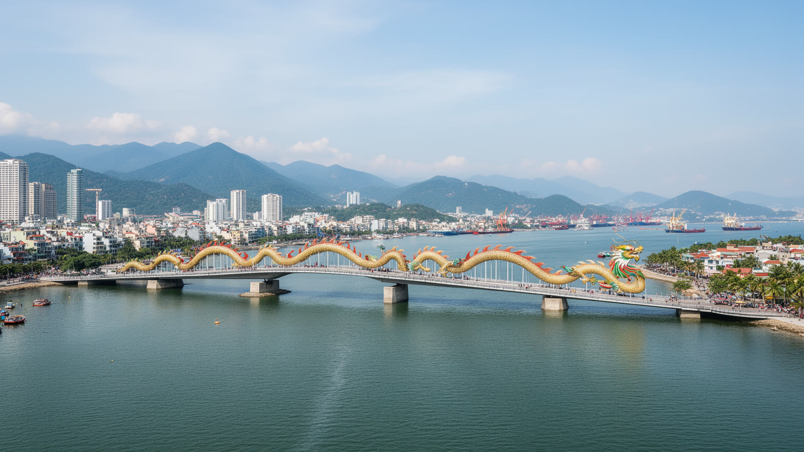
🇻🇳 ベトナム / 東南アジア / World City Atlas
ハン川の河口、南シナ海の海辺、空港、港湾、旧クアンナムの山地と遺産が一つの行政圏へ広がる中部ベトナムの結節都市です。観光地であり、物流と産業政策の実験場でもあります。
都市の骨格
ダナンはハン川河口の都市核、ティエンサ港、空港、ビーチリゾート、五行山、旧クアンナムの歴史都市と山地を結びます。海岸の明るさの背後に、物流、行政再編、労働移動、防災の課題があります。
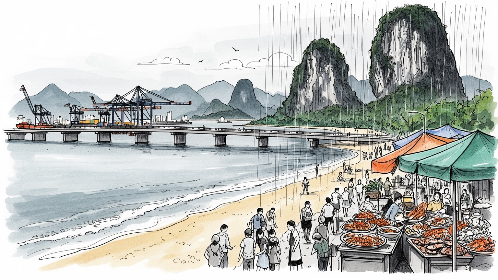
ダナンは中部ベトナムの海上玄関で、ハイヴァン峠、南北幹線、港、空港が重なります。旧クアンナムとの広域化で山地、海岸、遺産都市を束ね、南シナ海をめぐる安全保障と地域開発も近いテーマになる都市です。今も。
港湾、観光、IT、ハイテクパーク、教育、行政、建設、物流が雇用を作ります。ホテルや工場の現場、配達、清掃、警備、港湾作業には地方出身者も多く、成長の質は賃金と住まいで測られる重要な街です。生活費も問われます。
仏教寺院、祖先祭祀、漁村の祈り、チャンパ彫刻、クアンナムの祭礼、カトリック教会が重なります。観光地の華やかさの下に、家族、海の安全、先祖、地域共同体を守る生活の暦が続いている街です。海の祈りも残ります。
旅行者はミーケー海岸、ドラゴン橋、五行山、ホイアン方面へ向かうが、住民は台風、洪水、暑さ、家賃、通勤、教育、医療に向き合います。観光の動線と生活の道路は同じ都市で交差する日々です。市場の時間も重なります。
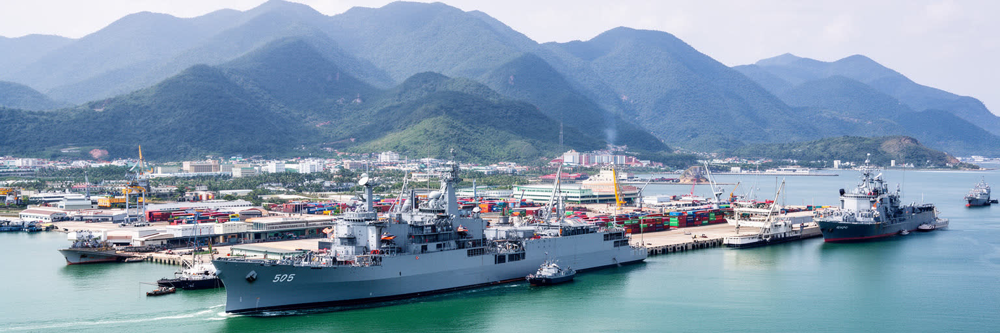
ダナンはベトナム中部の海に開いた窓です。ハン川の河口、ティエンサ港、国際空港、南北鉄道、国道一号線、ハイヴァン峠が短い距離に集まり、北のフエ、南のホイアンやクアンナム山地、さらにラオス方面へ向かう物流を受け止めます。港はコンテナや観光船だけでなく、漁業、燃料、建材、災害時の物資輸送を支える施設でもあります。南シナ海に面する位置は、海洋権益、海上警備、漁民の安全、外国投資、軍事史の記憶を都市の日常へ近づけるのです。ベトナム戦争期には軍事拠点として使われた空港と海岸も、現在は観光、航空、産業の基盤に読み替えられています。ダナンは観光広告では明るい海辺として描かれやすいが、地政学的には中部沿岸を守り、国内の南北軸をつなぎ、山地と海を結ぶ結節点です。行政再編で旧クアンナムを含む広い市域になったことで、港湾都市は沿岸の点ではなく、山地、農村、歴史都市、離島を抱える広域政府の中心になりました。港と峠と空港を同じ地図で見ると、ダナンの役割はリゾートだけではなく、国家の交通、安全保障、地域均衡を支える都市として見えてきます。海へ開く力と内陸を束ねる責任が、現在のダナンを形作っています。国際会議や企業誘致が行われる時も、この交通と安全保障の位置が背景になるため、都市の評価は景観だけでなく回廊としての信頼で決まるのです。湾の船影は、その責任を日々見せています。
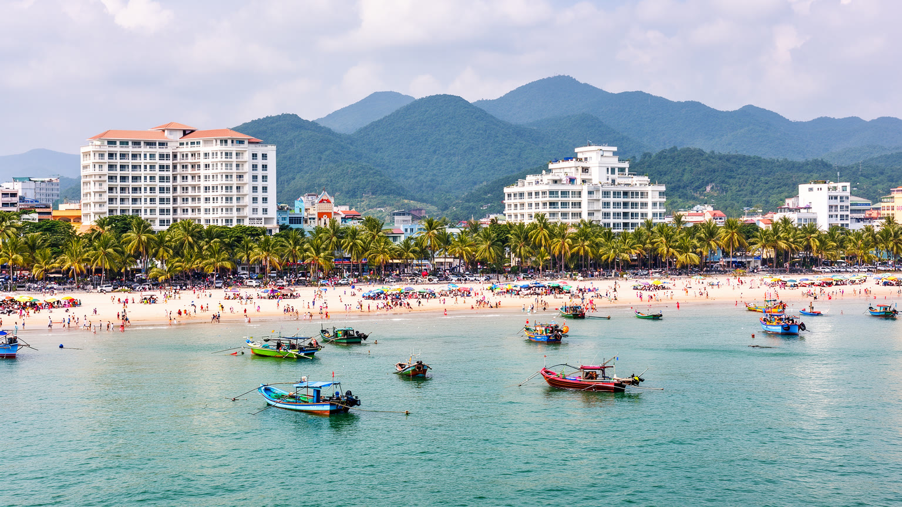
ダナン観光の入口は、ミーケー海岸の長い砂浜、ソンチャ半島、五行山、ハン川の橋、夜の水辺です。海岸沿いにはホテル、レストラン、スパ、会議施設が並び、国内旅行者、韓国や日本を含む東アジアからの旅行者、長期滞在者を引き寄せるのです。観光は雇用と税収を生む一方、土地価格、家賃、季節労働、海岸の公共性、生活道路の混雑を変えます。海は観光客の余暇の場所であると同時に、漁民の仕事場、住民の朝の運動、家族の週末、台風への備えの場でもあります。ビーチフロントが投資商品になりすぎれば、住民が海へ近づく権利は狭くなります。観光都市としての成熟は、ホテルの室数や空港便数だけでは決まらありません。清掃、排水、救助、交通、騒音管理、地元店の継続、労働者の住まいが整って初めて、海辺の魅力は長く続きます。繁忙期と閑散期の差は、飲食店の仕入れ、ホテル従業員の収入、配車サービスの仕事量にも表れるのです。さらにクルーズ客や会議旅行が増えるほど、短時間の消費を地域商店や文化施設へどう流すかが課題になります。海岸のライトアップや橋の演出も、周辺住民には騒音、交通規制、夜間労働として届きます。ダナンの海岸を読む時、波と夜景だけでなく、早朝の漁、清掃員、屋台、ビーチに向かう市民の道を見なければなりません。観光の成功は、訪れる人の快適さと住む人の海が両立するかにかかっています。
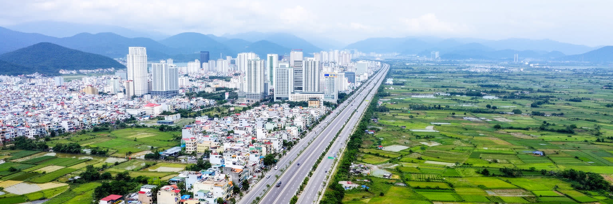
二〇二五年の行政再編後、ダナンは旧クアンナムを含む広い直轄市として扱われるようになりました。従来の都市イメージは、ハン川、ビーチ、港、空港を中心にした比較的コンパクトな沿岸都市でしたが、新しい市域はホイアン周辺の文化圏、山地、農村、工業団地、沿岸集落、ホアンサ特区まで含みます。これは単なる面積の拡大ではなく、都市政策の尺度が変わる出来事です。中心部のホテル開発と山地の生活道路、港湾物流と農村の市場、文化遺産と工業用地、観光収入と公共サービス配分を同じ自治体が考える必要があります。広域化は投資誘致や交通計画を強くする可能性を持つが、周縁部の声が中心部の成長戦略に埋もれる危険もあります。山村の医療、学校、道路、災害対応は、海辺の投資案件ほど目立たないが、新しい市域の信頼を左右します。公共予算、行政窓口、土地登記、観光ブランドが再編される時、住民は新しい制度を日常の手続きとして経験します。統計の数字も合併前後で意味が変わるため、都市の成長を読む時は行政範囲を確認する必要があります。ダナンを読むには、旧市街の華やかな橋だけでなく、合併後の地図で誰が遠くなり、誰が新しい機会へ近づくのかを見る必要があります。行政の名前が同じになっても、生活圏、方言、土地利用、歴史記憶は一夜で混ざらありません。新しいダナンの課題は、港湾都市の速度と広域地域の多様さをどう調整するかにあります。
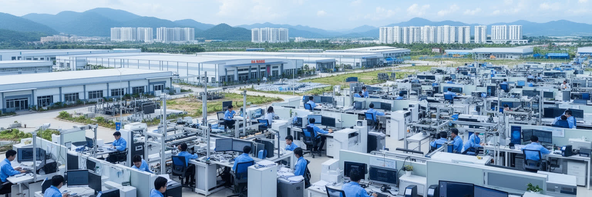
ダナンの経済は海辺観光で目立つが、都市の成長戦略は観光だけに依存しません。ハイテクパーク、情報技術、半導体関連の誘致、教育機関、ソフトウェア、物流、港湾サービス、建設、医療が新しい雇用の軸として語られるのです。中部に位置するため、ホーチミンやハノイほど巨大ではありませんが、生活費、空港、海辺の環境、大学人材を組み合わせて企業を呼び込む余地があります。もっとも、技術産業の看板が増えても、都市を動かすのは専門職だけではありません。工場作業、ホテルの厨房、清掃、警備、配達、港湾荷役、建設、保育、公共交通の仕事があって初めてサービス都市は機能します。外資系企業が求める英語力や技術教育は、地方出身の若者に機会を与える一方、学費や住居費の壁も作ります。産業政策が成功するかは、投資額だけでなく、若者が技能を身につけ、安定した賃金で住み続けられるかで決まるのです。高付加価値化が進むほど、教育と住宅と交通の差が機会の差になりやすいです。地元企業が外資の下請けだけに留まらず、設計、研究、観光運営、地域物流へ関われるかも重要です。起業支援や職業訓練が観光現場の経験と結びつけば、サービス産業から技術産業への移動も現実的になります。ダナンの産業を読む時は、ビーチ沿いのホテルと工業団地、大学、港、夜間に働く人を同じ経済として見る必要があります。観光の季節性を補い、地域全体の雇用を厚くできるかが、次の成長の質を決めます。
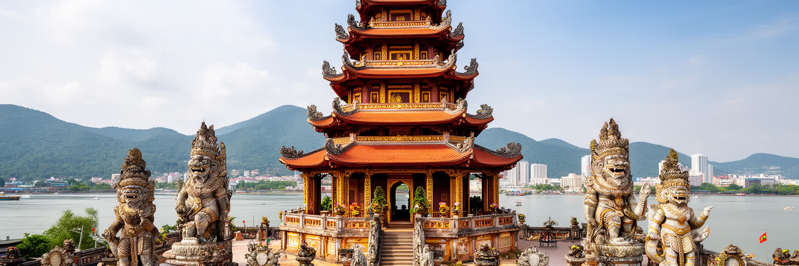
ダナンの文化を海辺リゾートだけで語ると、都市の深い時間を見落とすのです。市内にはチャンパ彫刻を集める博物館があり、ミーソン聖域やホイアンへ向かう玄関としても機能します。チャンパの石彫、ヒンドゥー的な神像、海上交易の記憶は、現在のベトナム語圏の都市風景の下に、より古い沿岸世界があったことを示します。仏教寺院、祖先祭祀、漁村の海神信仰、カトリック教会、家族の墓参りも、観光写真には出にくい生活の暦を作ります。五行山の洞窟寺院やソンチャ半島の観音像は、眺望の名所であると同時に、祈り、巡礼、商売、交通の結び目です。旧クアンナムを含む広域化によって、ダナンはホイアンの町並み、農村祭礼、山地の少数民族文化とも一層近くなったのです。遺産は保存地区の飾りではなく、土地、信仰、観光、教育、地域の誇りをめぐる現代の資源です。観光向けに整えられた説明だけでは、漁村の安全祈願や家族の命日、地域の寄り合いが持つ重みは見えにくいです。学校教育や博物館展示が地域の多層的な過去を伝えられるかは、若い世代の都市理解にも関わります。方言、料理、祭礼の違いを残すことも、広域都市になったダナンの文化政策です。文化を読む時、誰の記憶が展示され、誰の生活が観光化され、どの儀礼が今も家族を支えるかを見なければなりません。ダナンの信仰と遺産は、海辺の明るさに奥行きを与えています。
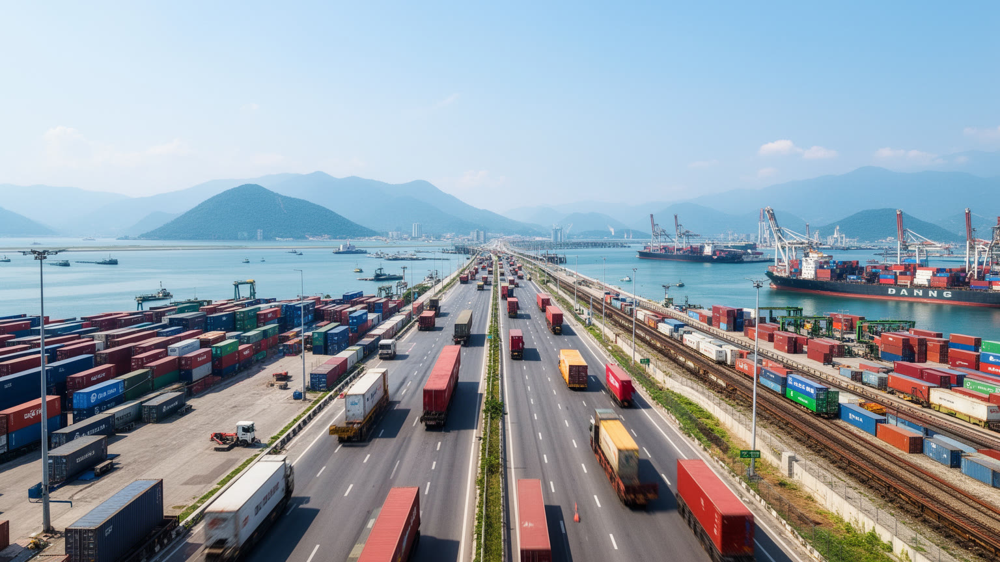
ダナンの強みは、空港、港、鉄道、幹線道路、都市中心部が近いことです。国際空港は市街地のすぐそばにあり、観光客、企業人、留学生、帰省客を短時間で海岸や中心部へ運びます。ティエンサ港は貨物とクルーズを受け、南北鉄道と国道一号線はハイヴァン峠を越えてフエ方面へ、南へはクアンナムや中部高原方面へ伸びるのです。橋の多いハン川は都市の象徴であると同時に、東西の住宅、ホテル、商業地を結ぶ生活インフラでもあります。交通の近さは便利ですが、空港周辺の土地利用、港湾道路の混雑、観光バス、バイク、歩行者安全、洪水時の迂回路といった問題も生みます。広域化した市域では、中心部の短い移動と山地・農村部の長い移動が同じ行政課題になります。物流を速くするだけでなく、住民が学校、病院、仕事、市場へ行きやすい移動を作れるかが重要です。観光客にはタクシーで近く感じる距離も、住民には毎日の燃料代、雨具、駐輪、渋滞として経験されます。港湾や空港の成長が住宅地を分断しないよう、歩行者空間や公共交通の接続も必要になります。将来の都市鉄道やバス改善は、中心部だけでなく広域市域の公平さを測る指標になります。ダナンを読むには、ドラゴン橋の夜景だけでなく、朝の通勤バイク、港へ向かうトラック、空港で働く人、雨の日の低地道路まで見る必要があります。交通は都市の景観ではなく、機会と安全を配る仕組みです。
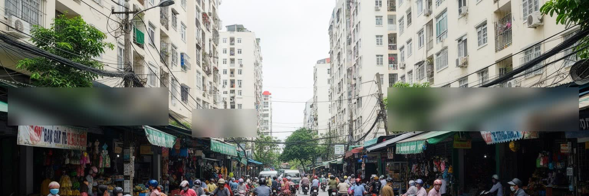
ダナンの暮らしは、海に近い開放感と、急速な都市化の負担を同時に持ちます。中心部や海岸沿いではホテル、マンション、飲食店、商業施設が増え、仕事と余暇の選択肢が広がったのです。一方で、家賃や土地価格の上昇は、若い世帯、サービス労働者、地方から来た学生や労働者に重くのしかかるのです。住まいの条件は、海に近いかだけではなく、学校、病院、市場、職場、バス、洪水リスク、台風時の安全で決まるのです。観光地として整った地区の裏側には、季節収入に依存する家庭、夜勤のホテル労働、建設現場で働く人、古い住宅地の排水問題があります。広域化した後は、都市中心部の住宅問題だけでなく、旧クアンナムの農村や山地の生活基盤もダナンの問題になります。市場へ行く時間、子どもの通学、祖父母の医療、冠水しやすい路地の掃除は、観光パンフレットには出ない生活の都市計画です。急な開発で近所の店や家族経営の食堂が移ると、住民の日常の距離感も変わります。移住者や学生にとっては、下宿、共同住宅、仕事紹介、医療へのアクセスが都市に根づく入口になります。住民にとっての良い都市とは、海岸が美しいことだけではなく、暑い日に休める日陰があり、雨の日に道路が機能し、子どもや高齢者が近くで必要なサービスを受けられることです。ダナンの生活を読む時、リゾートの快適さと家計の現実を同時に見る必要があります。都市の魅力は、働く人がその都市に住み続けられる時に初めて長持ちします。
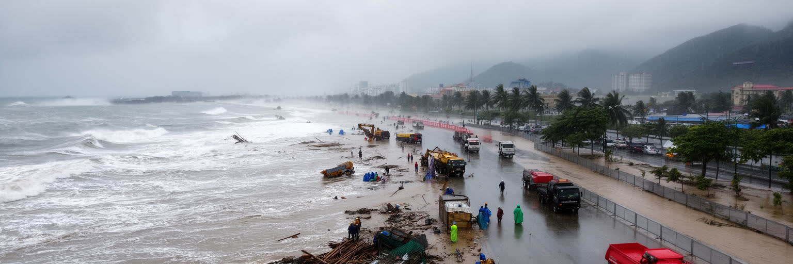
ダナンは熱帯モンスーン気候の沿岸都市で、乾季の強い日差しと雨季の激しい雨、台風、高潮、河川洪水に向き合います。海岸のリゾートや高層住宅は明るい景観を作りますが、海に近いほど風、波、塩害、浸水の影響も受けます。ハン川や周辺河川の流域、山地から流れ込む水、低地の排水能力は、都市の安全を左右します。気候変動で雨の強さや台風の影響が変われば、観光、港湾、住宅、道路、電力、上下水道が同時に試されます。暑さも重要で、屋外で働く建設労働者、清掃員、配達員、漁民、観光案内の人に負担をかけるのです。防災は堤防や避難計画だけではなく、日陰、排水路の維持、警報の多言語化、ホテルと地域の連携、弱い立場の人を早く避難させる仕組みまで含みます。広域化により山地や農村部の土砂災害、孤立集落、農地被害も市の課題になりました。停電時のホテル運営、港の再開、学校の休校判断、避難所での高齢者支援も、気候リスクの一部です。海岸侵食や砂浜の管理は観光資源を守るだけでなく、住民の防災線を守る仕事でもあります。旅行者が安全に滞在できるかも、住民向けの警報、排水、避難路の質に依存しています。ダナンの海辺を楽しむには、その美しさを支える防災と環境管理を見る必要があります。海と山が近い都市では、気候リスクも近いです。備えの質が、観光都市としての信頼と住民の安心を同時に決めます。
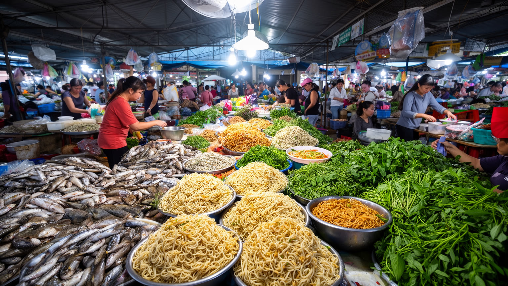
ダナンの食は、海、川、クアンナムの農村、観光都市の日常が混ざる場所で生まれます。市場には魚、貝、エビ、イカ、野菜、米、香草、発酵調味料が並び、ミークアン、ブンチャーカー、バインセオ、海鮮料理、路上の朝食が住民の時間を支えます。観光客にとって食は旅の楽しみですが、住民にとっては家計、仕入れ、通勤、家族の世話、地域の付き合いに関わる日常の基盤です。海辺の高級店と市場の小さな食堂は、見た目は違っても、漁港、卸売、氷、配送、調理労働でつながっています。物価が上がれば皿の中身は変わり、台風で漁が止まれば市場の値札も変わります。旧クアンナムを含む広域化は、農産物、郷土料理、職人の手仕事を都市の食文化へさらに近づけるのです。朝の麺屋や屋台は、学生、港湾労働者、ホテル従業員、観光客が同じ時間に交差する小さな公共空間でもあります。衛生管理や観光客向けの価格表示が整うほど、地元客の使いやすさとのバランスも問われます。近郊農村と海産物の流通が途切れれば、都市の味はすぐに変わります。食を読むことは、観光宣伝の名物を並べることではなく、誰が早朝に仕入れ、誰が厨房で働き、誰が家族の昼食を整えるかを見ることです。ダナンの食卓は、海辺の軽さと中部ベトナムの濃い味、移動する労働者の生活を映します。市場のにおいと湯気は、都市経済の最も身近な指標です。

ダナンを読むことは、海辺の快適な観光都市という第一印象を、港湾、行政再編、遺産、労働、防災、広域地域の問題へ開くことです。ハン川の橋と夜景は都市の象徴ですが、その背後にはティエンサ港、国際空港、南北幹線、ハイヴァン峠、旧クアンナムの農村と山地、チャンパ遺産、戦争記憶があります。観光は街を明るく見せ、雇用を作る一方、土地価格、季節労働、海岸の公共性、環境負荷を変えます。ハイテクやITの誘致は新しい将来像を与えるが、現場労働、教育機会、住宅費と結びつかなければ、成長は一部の人に偏るのです。広域化したダナンは、単なるビーチシティではなく、中部ベトナムの海と山を調整する政府の中心になりました。だから都市の価値は、観光客の滞在満足だけでなく、住民が災害に備え、働き、学び、祈り、海へ近づき、地域の記憶を保てるかで測られるのです。旅行者が一泊で通り過ぎる街ではなく、広い市域の生活を支える政治と経済の結節点として見ると、ダナンの輪郭は変わります。さらに戦争の記憶を消さず、海辺の消費と地域の尊厳を両立させる姿勢も都市の成熟を左右します。人口やGDPの数字も、合併後の広い市域を前提に読む必要があります。ダナンの魅力は、軽やかな海風と複雑な責任が同じ場所にある点にあります。港、橋、海岸、山地、市場を一つの地図に置くと、この都市は中部ベトナムの未来を試す実験場として立ち上がるのです。